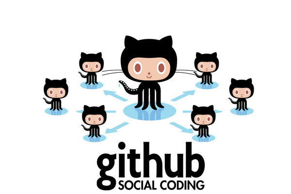
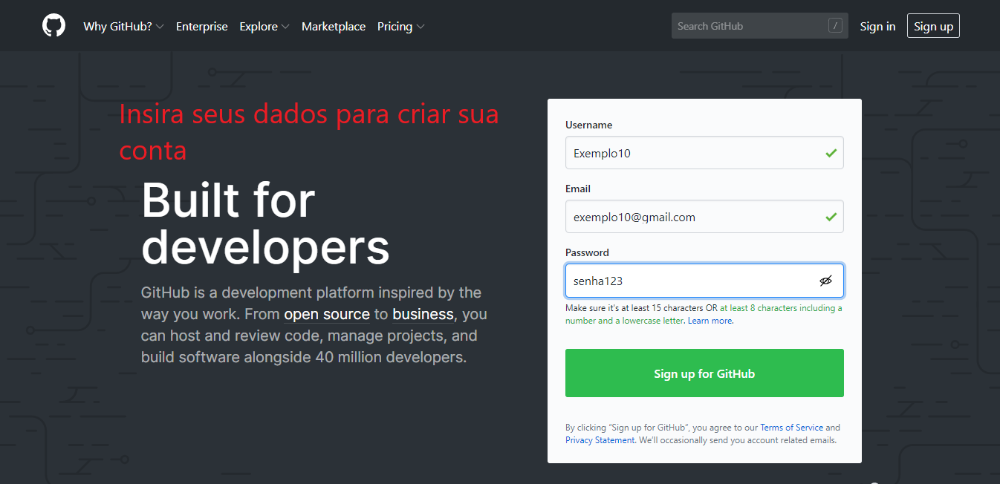
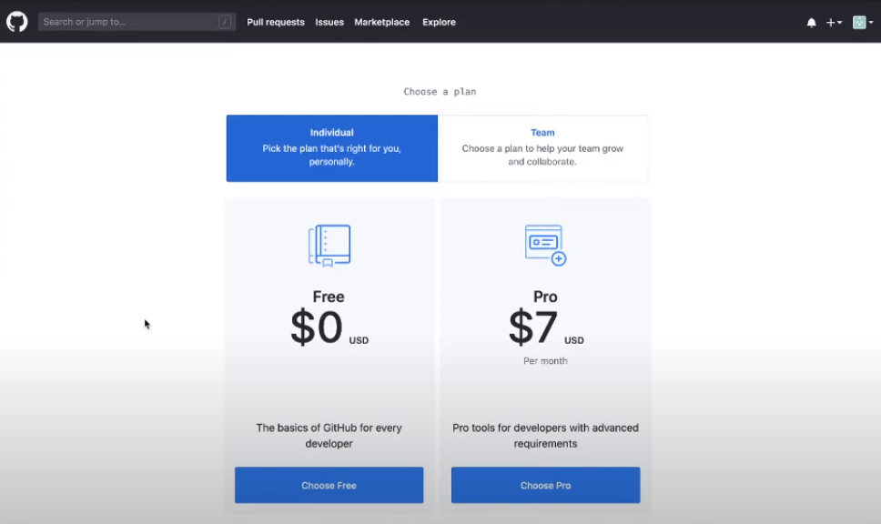
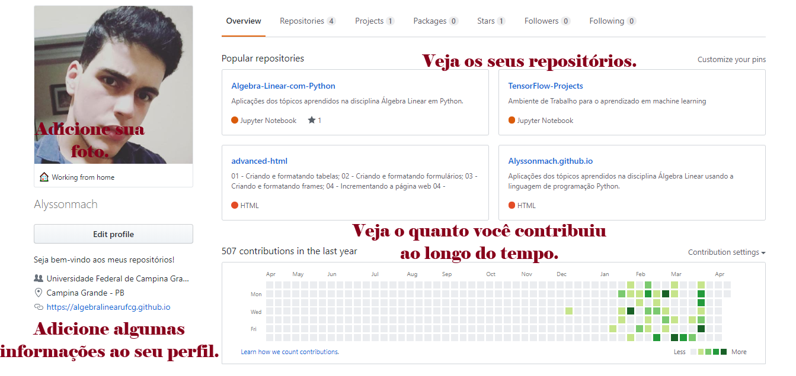
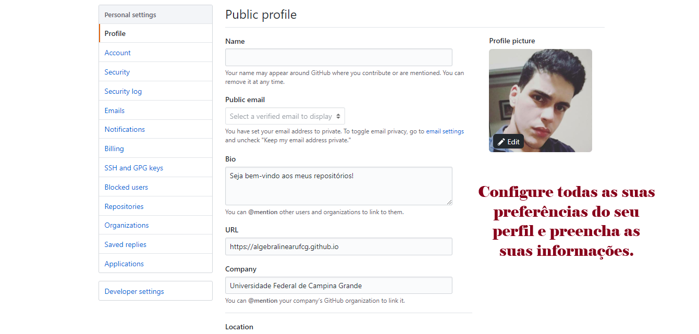
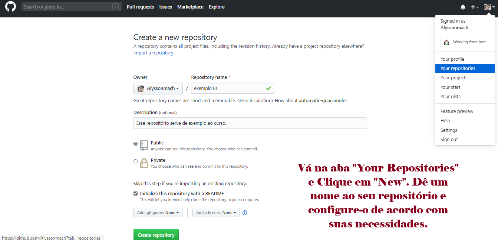
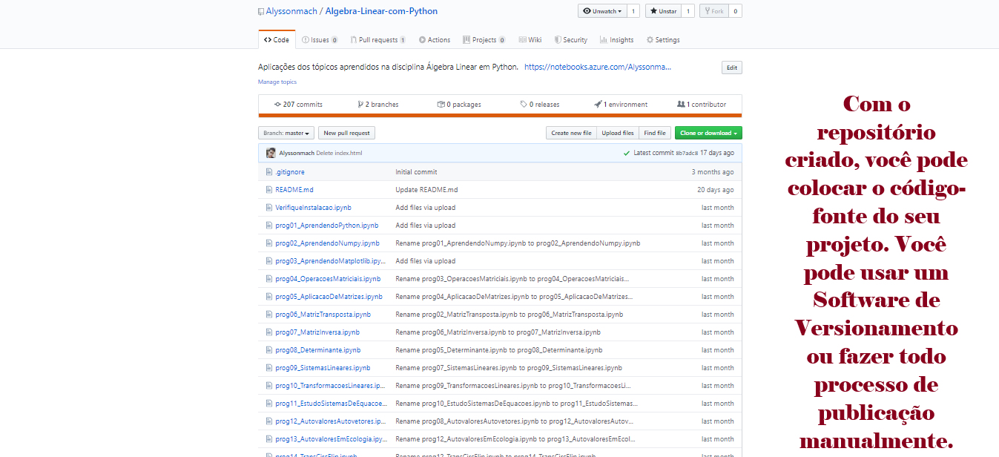
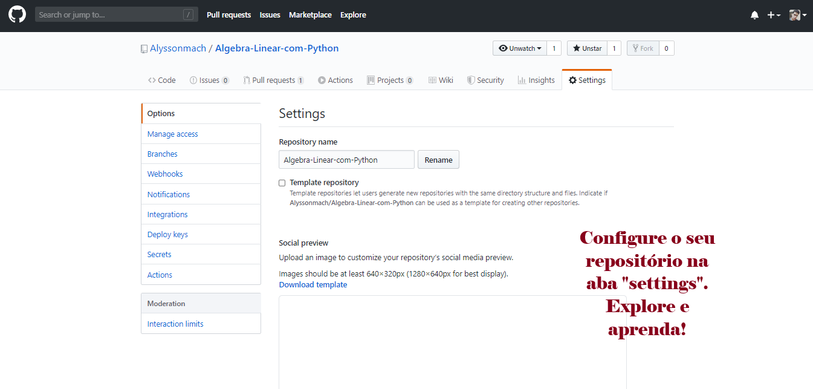
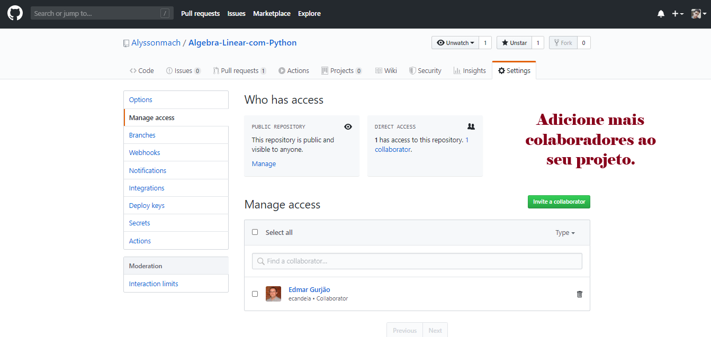

O que é o GitHub?¶
O GitHub é um dos maiores e mais famosos repositórios remotos que existem mundialmente, sendo ele uma plataforma que hospeda códigos fonte com auxílio do software de versionamento Git. Se você ainda não viu nossa parte do curso que fala sobre o Git, acesse o link abaixo, nele há itens importantes para você estudar e conseguir avançar bem no curso.
O GitHub poderia ser somente uma espécie de Google Drive ou um Dropbox, em que poderiamos armazenar nossos projetos e arquivos. Entretanto, os desenvolvedores da plataforma foram mais criativos: o GitHub pode ser considerado uma plataforma social para programadores. Como trata-se de uma comunidade Open Source, podemos ter contato com outros programadores com o objetivo de aumentar o nosso Networking, um fator fundamental em uma carreira profissional.
Open Source: Código aberto é um modelo de desenvolvimento criado em 1998, que promove o licenciamento livre para o design ou esquematização de um produto, e a redistribuição universal desses, com a possibilidade de livre consulta, examinação ou modificação do produto, sem a necessidade de pagar uma licença comercial, promovendo um modelo colaborativo de produção intelectual.
Networking: é uma palavra em inglês que indica a capacidade de estabelecer uma rede de contatos ou uma conexão com algo ou com alguém.. Essa rede de contatos é um sistema de suporte onde existe a partilha de serviços e informações entre indivíduos ou grupos que têm um interesse em comum.
O GitHub é uma plataforma muito utilizada no mundo inteiro por profissionais e entusiastas do ramo da tecnologia, com ela, podemos divulgar inúmeros projetos, ganhar contribuição de outros profissionais, ser um participante ativo em tornar o conhecimento mais acessível para as pessoas e dar continuidade a projetos de terceiros, com a devida licença. Nele, é contabilizado mais de 36 milhões de usuários ativos no mundo.

O GitHub foi desenvolvido por Chris Wanstrath, J. Hyett, Tom Preston-Werner e Scott Chacon, e todo o projeto começou em 2008. A sede está localizada em São Francisco, na Califórnia.
Podemos também usar um recursos muito interessante para hospedar o nosso site gratuitamente chamado de GitHub Pages, usando HTML, CSS e js. Entretanto, não podemos criar páginas muito complexas que envolvam ferramentas de banco de dados, estamos falando de páginas simples com fins educativos.

Veja as vantagens que o GitHub oferece aos seus usuários:
- Criação de repositórios públicos ilimitados.
- Hospedagem de códigos fonte;
- Em sua maioria é gratuito, exceto para projetos gigantescos de grandes corporações;
- Possui características de uma rede social.
- Possui GitHub Pages integrado (você está acessando uma página criada com esse recurso, por exemplo);
- Possibilidade de colaboração e de aumentar sua networking com outros profissionais;
Por mais que o GitHub seja a principal plataforma com essas características, também podemos citar outras bastante interessantes, em que você pode armazenar remotamente os seus arquivos:
| Outras Plataformas análogas ao GitHub: |
|---|
| 1. GitLab |
| 2. Bitbucket |
| 3. Phabricator |
| 4. Gogs |
| 5. Kallithea |
Entrando na Comunidade GitHub¶
Siga os passos abaixo para criar o seu perfil no GitHub e também criar o seu primeiro repositório.

Entre na página https://github.com e cria a sua conta gratuitamente. Será necessário verificar o seu e-mail para validá-la e preencher um formulário sobre suas preferências.

Escolha a opção Free. Você não terá nenhuma restrição no uso. A versão paga é feita mais para empresas com grandes equipes de desenvolvedores que necessitam de recursos mais complexos.

Edite o seu perfil. A escolha de uma boa foto, seguida de informações claras, ajudam a torná-lo mais profissional. Além disso, na aba do perfil você também pode visualizar todos os seus repositórios criados e analisar também um pequeno infográfico dos dias contribuidos por você ao longo do tempo.

Na aba de configurações do perfil, você tem acesso a mais configurações detalhadas.

Na aba "your repositories", você pode estar clicando em "new" parar criar o seu própio repositório. Além disso, é necessário que você preencha corretamente os campos de configuração.

Mais adiante, vamos utilizar o Git para publicar conteúdos ao repositório. Entretanto, você pode relizar todo o processo manualmente (esse que não é o mais adequado).

Na aba "settings", você pode realizar uma configuração mais detallhada ao seu repositório.

Ainda em "Settings", escolhendo "Manage acess", você pode adicionar as pessoas que irão fazer parte do projeto com você.
Vale salientar que, independente do nível de conhecimentos em programação que o usuário tenha, a plataforma GitHub é acessível a todos, pois com ela, é possível aprender conteúdos de terceiros para, posteriormente, o usuário também ser um fator de contribuição ativa na plataforma.
Próximos Passos...¶
Mais adiante, vamos estudar no curso, em detalhes, a criação de repositórios e também aprender a fazer as devidas instalações de alguns softwares para dinamizar o seu uso no GitHub.
Está gostando do conteúdo? Compartilhe com seus amigos para que eles possam aprender também! Ajude a tornar a educação gratuita mais plural e democrática.